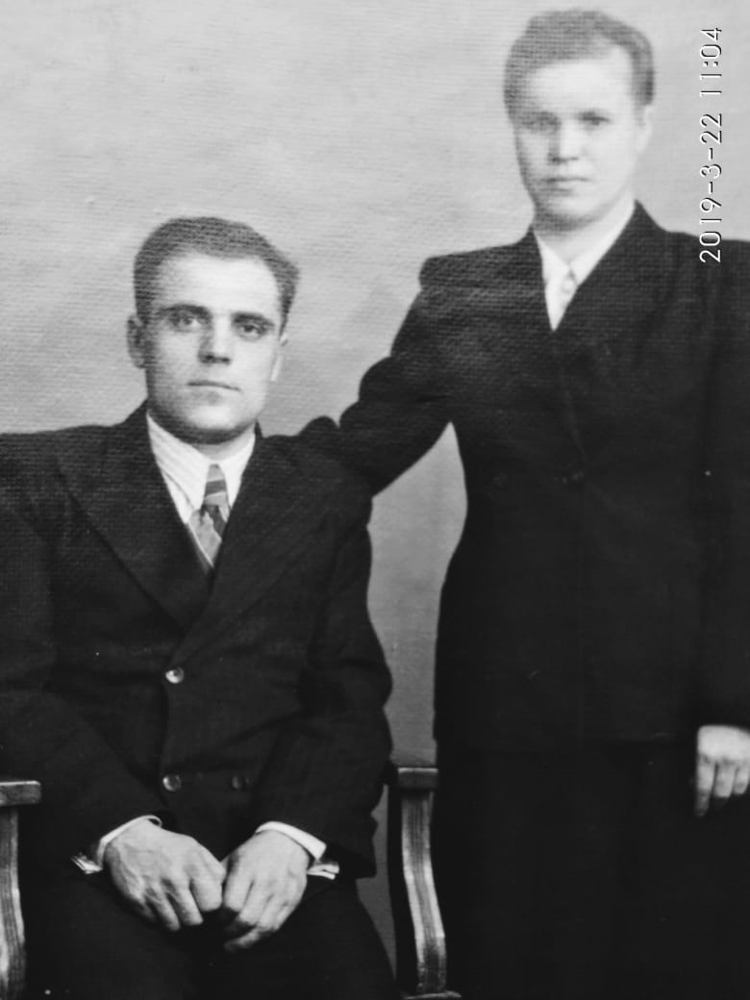

Родился: 22.08.1925
Умер: 11.10.1998, г. Копейск
Род: Сербиновы
Продолжительность жизни: 73
Место жительства: г. Копейск
Основное занятие: забойщик
Детей нет
запись о рождении https://www.familysearch.org/ark:/61903/3:1:3Q9M-CS9L-49V7-8?i=331&cat=1405206
"Дядя Гриша", Стахановец
Жил в поселке шахты 205, потом переехал в Октябрьский поселок, работал в шахте № 3-я Калачевская комбината "Челябинскуголь", очистной забой, пока не закрыли шахту.
Награжден медалью "За доблестный труд в Великой Отечественной войне 1941-1945 гг." (протокол вручения удостоверения к медали № 100 от 06.02.1995, ОГАЧО Ф. Р-700 О. 1 Д. 239 Л. 285).
Награжден юбилейной медалью "За доблестный труд. В ознаменование 100-летия со дня рождения Владимира Ильича Ленина" 20.03.1970г. (ОГАЧО Ф. Р-274 О. 11 Д. 14 Л. 236)
Отец: Сербинов Степан Федорович
Мать: Сербинова (Ковачева) Анастасия Михайловна
Сестра: Сербинова Мария Степановна
Брат: Сербинов Георгий Степанович
Сестра: Станчевская (Сербинова) Доминикия Степановна
Сестра: Турлакова (Сербинова) Акулина Степановна
Брат: Сербинов Василий Степанович
Брат: Сербинов Иван Степанович
Брат: Сербинов Александр Степанович
Сестра: Мокина (Сербинова) Елена Степановна
Брат: Сербинов Федор Степанович
Сестра: (Сербинова) Мария Степановна
Сестра: Салтовская (Сербинова) Анна Степановна
Жена: Сербинова Мария Александровна
Дядя Гриша - Георгий Степанович Сербинов и его супруга Маруся. |